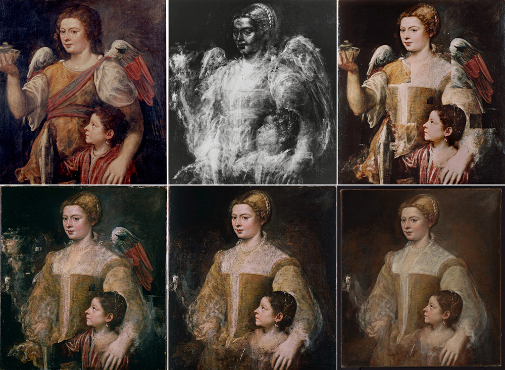

Дом Рубенса в Антверпене раскрывает секрет шедевра Тициана из частной коллекции
Несколько веков портрет загадочной молодой женщины и маленькой девочки скрывался под изображением «Святого Тобиаса и ангела», написанным поверх него сразу после смерти художника

Владелец картины, профессиональный реставратор живописи старых мастеров, потратил 20 лет на то, чтобы открыть миру оригинальный замысел Тициана. Предположительно, неизвестная женщина на холсте — это любовница Тициана с незаконнорожденной дочерью. В пользу этого говорит тот факт, что их изображение находилось в мастерской художника и было спешно изменено после его кончины.
Хотя все может быть гораздо прозаичнее: на картину с религиозным сюжетом было гораздо проще найти покупателя, чем на портрет некой дамы с ребенком. После смерти Тициана его старший сын Помпонио продал дом отца вместе со всей обстановкой и картиной — так «Святой Тобиас» оказался в семье Барбариго (владельцев стекольного производства). В их роскошном палаццо Барбариго на Гранд-канале в Венеции картина и провела следующие 250 лет.
Кстати, в середине XIX века коллекцию этого дома приобрел Николай I. Так несколько картин Тициана оказались в Эрмитаже, откуда в 1920-х годах уже в Пушкинский музей попал холст «Се, Человек» (Ecce Homo), который сейчас восстанавливается. Что касается «Тобиаса и ангела», то в 1920-х годах он перешел в руки парижского арт-дилера Рене Жимпеля, который незадолго до Второй мировой войны спрятал свою коллекцию в лондонском гараже, где с большим трудом ее отыскали его сыновья.
То, что под казавшимся оригинальным изображением находится другое, в 1948 году показал рентген. Реставрация началась в 1980-х; вскоре после ее завершения освобожденная от поздних записей картина была представлена на ретроспективе Тициана в Прадо в 2003 году, а также на выставке «Незаконченное. Мысли, ставшие видимыми», которой в 2016 году открылся Метрополитен-Бройер, новое пространство знаменитого нью-йоркского музея.
Нынешний владелец передал «Портрет дамы с дочерью» Тициана на долгосрочное экспонирование, и появление шедевра в Доме Рубенса вполне закономерно: и сам бывший его владелец, и еще один антверпенский гений Антонис ван Дейк почитали венецианского мастера, вдохновлялись его работами и, как полагают исследователи, вполне могли видеть «Святого Тобиаса и ангела» в палаццо Барбариго.
Мэр Антверпена Барт де Вевер отмечает, что программа сотрудничества с частными коллекционерами, по сути, единственно возможный сейчас способ для многих европейских музеев получить произведения такого уровня: они появляются на арт-рынке чрезвычайно редко и стоят слишком дорого.
Автор: Мария Сидельникова15 АВГУСТА